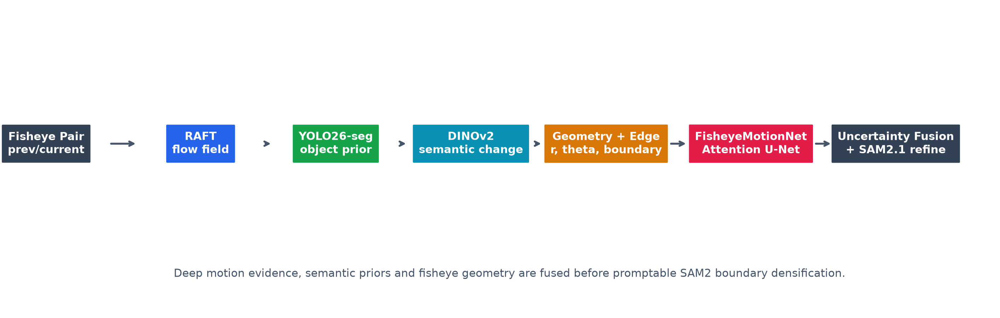
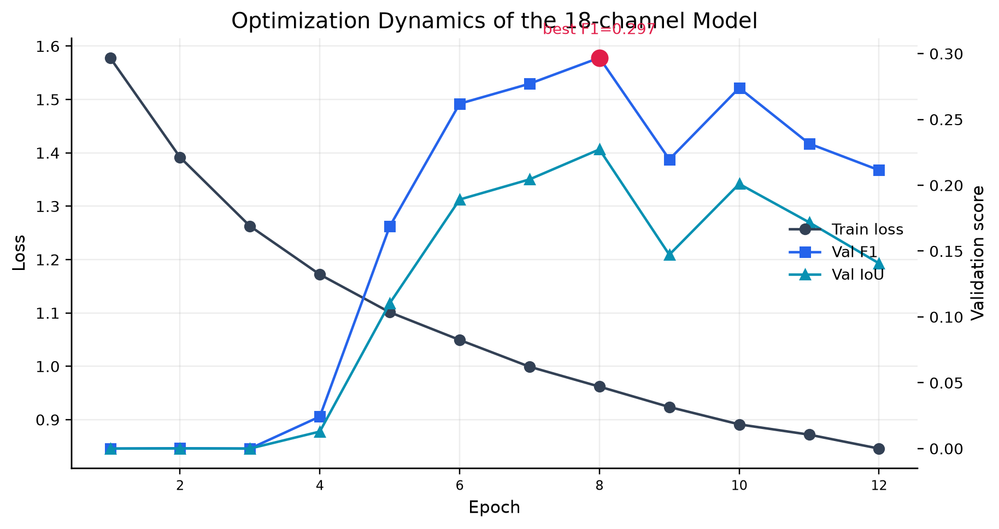
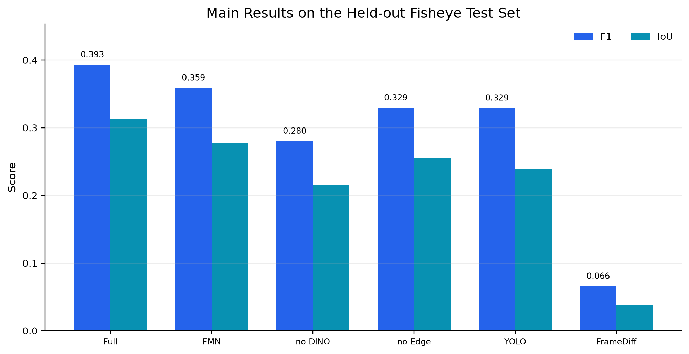
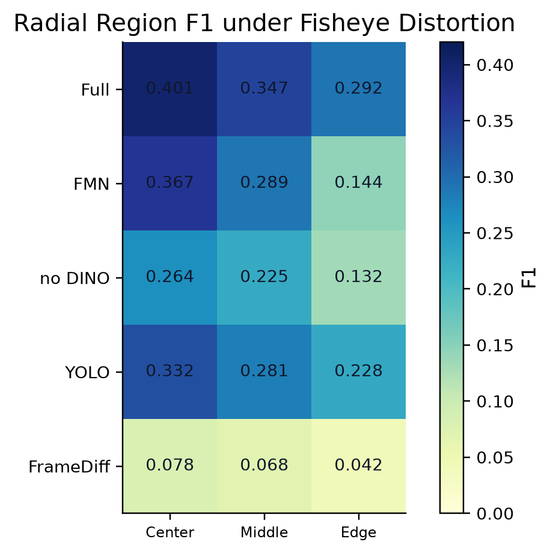
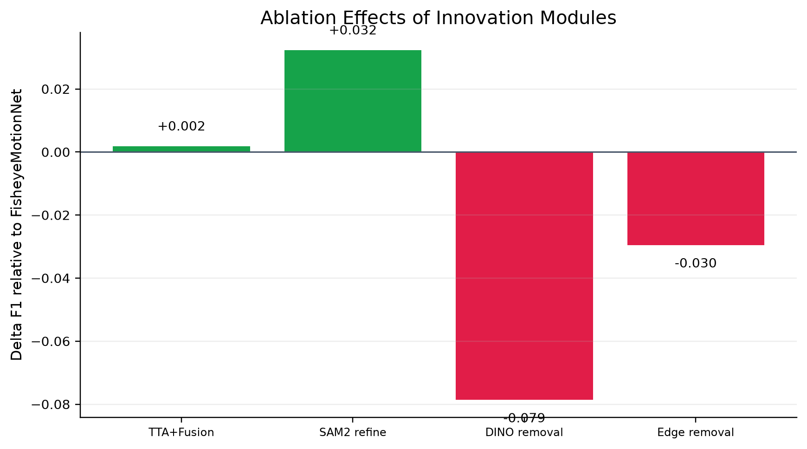
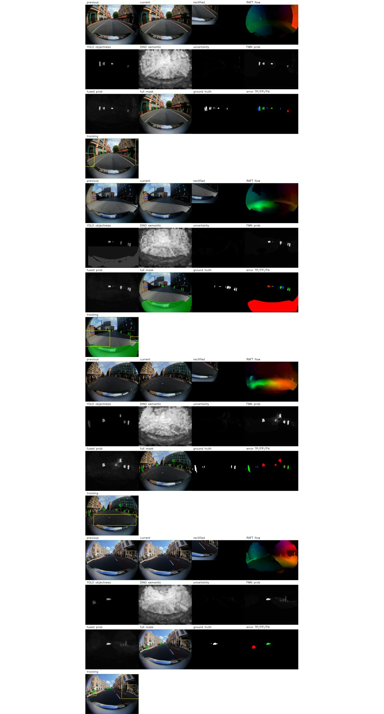

FisheyeMotion: 面向鱼眼视频的深度运动区域抽象与目标跟踪

1. Motivation and Contributions
鱼眼视频的大视场带来强径向畸变，使运动区域边界、尺度和方向都与透视相机下的假设不同。FisheyeMotion 的核心主张是将运动、实例、语义、边界和几何五类证据联合建模，而不是依赖单一阈值或单一检测器。
- 使用 RAFT large 提供深度光流运动证据。
- 使用 YOLO26-seg 提供目标实例 objectness 与 prompt boxes。
- 使用 DINOv2 patch token 构造 semantic saliency/change prior。
- 使用 edge prior 与 boundary-weighted loss 强化轮廓质量。
- 使用 TTA uncertainty fusion 与 SAM2.1 进行最终 mask refinement。
2. Method
FisheyeMotionNet 输入 18 通道：prev RGB、curr RGB、frame diff、RAFT flow、YOLO objectness、DINO saliency/change、edge prior 和鱼眼 geometry maps。训练损失为 edge-weighted BCE、Dice loss 与 boundary loss 的组合。推理时原图与水平翻转图形成 TTA 均值和不确定性，融合概率图再作为 SAM2 prompt。
3. Experimental Setup
数据集包含 130 组鱼眼相邻帧 pair，固定种子 42 划分为 train/val/test = 70/15/15。测试集包含 19 个样本。实验运行于 RTX 4060 Laptop GPU，PyTorch 2.11.0+cu128，训练与推理均禁止 CPU fallback。

4. Quantitative Results

| Method | IoU | Precision | Recall | F1 | Center | Middle | Edge |
|---|---|---|---|---|---|---|---|
| Full-RAFT-YOLO-DINO-FMN-SAM2 | 0.3131 | 0.3613 | 0.5830 | 0.3932 | 0.4012 | 0.3471 | 0.2915 |
| FisheyeMotionNet-no-RAFT | 0.2970 | 0.4356 | 0.4013 | 0.3774 | 0.3515 | 0.3179 | 0.1677 |
| FisheyeMotionNet-no-geometry | 0.2915 | 0.4266 | 0.3816 | 0.3755 | 0.3363 | 0.3163 | 0.1869 |
| FisheyeMotionNet | 0.2771 | 0.3964 | 0.4043 | 0.3590 | 0.3674 | 0.2889 | 0.1445 |
| YOLO-only | 0.2384 | 0.2588 | 0.5933 | 0.3292 | 0.3324 | 0.2811 | 0.2283 |
| FrameDiff | 0.0376 | 0.0534 | 0.4058 | 0.0658 | 0.0784 | 0.0676 | 0.0419 |
5. Region and Ablation Analysis


6. Qualitative Evidence

7. Conclusion
FisheyeMotion shows that robust fisheye moving-area abstraction requires cooperative modeling across motion, semantics, geometry and boundary refinement. The optimized full system reaches the best overall F1 and IoU, while the ablations show that DINOv2 and edge priors materially improve the learned network before SAM2 refinement.
References
- RAFT: https://arxiv.org/abs/2003.12039
- DINOv2: https://arxiv.org/abs/2304.07193
- SAM2: https://arxiv.org/abs/2408.00714
- Cutie VOS: https://arxiv.org/abs/2310.12982
- SEA-RAFT: https://arxiv.org/abs/2405.14793
- Segment Any Motion in Videos: https://arxiv.org/abs/2503.22268